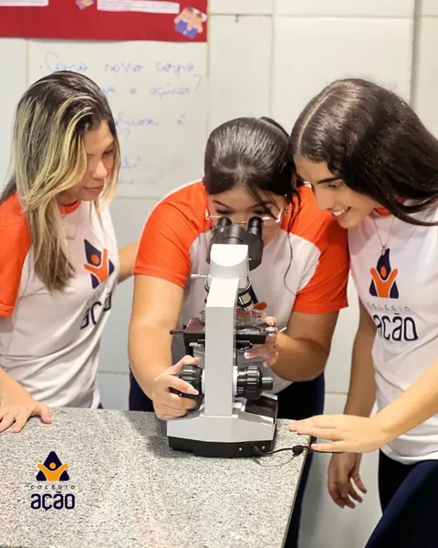
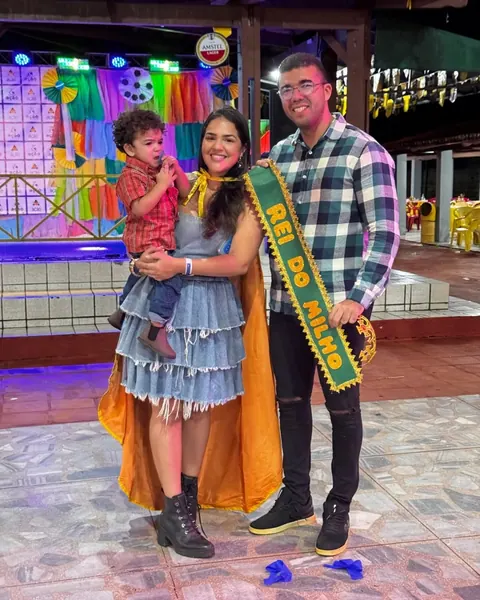
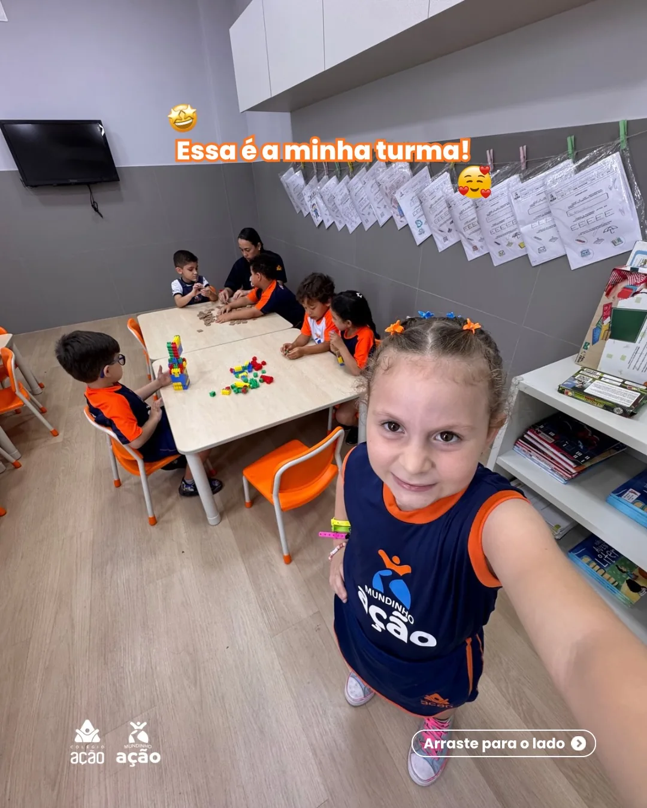
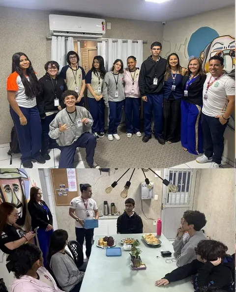
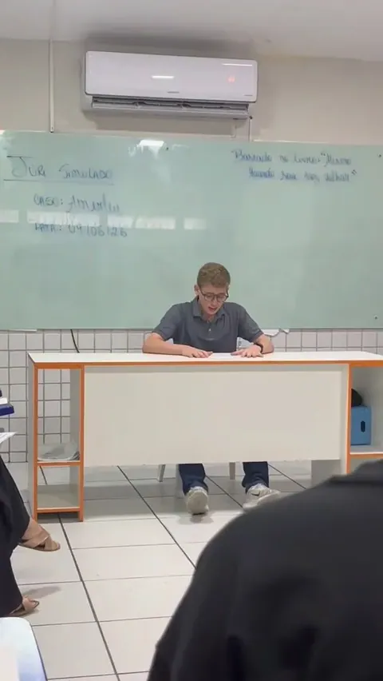
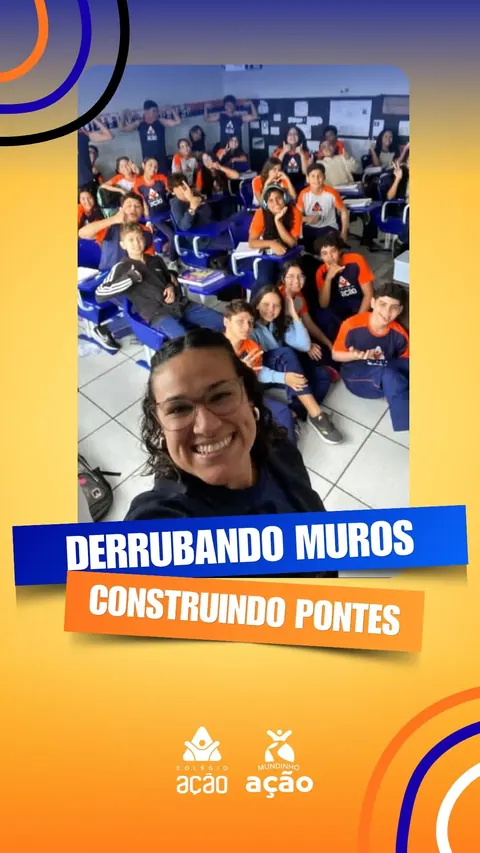
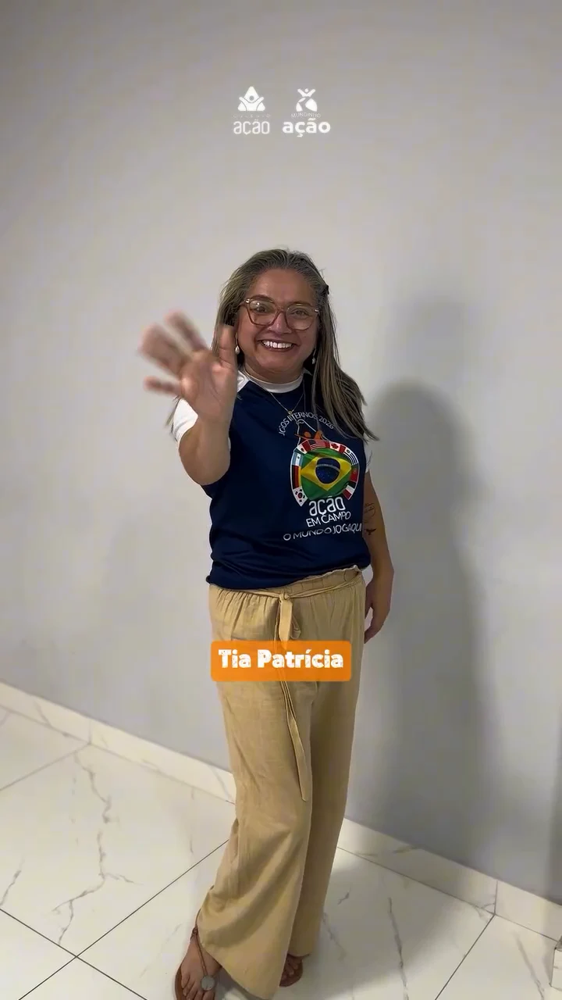
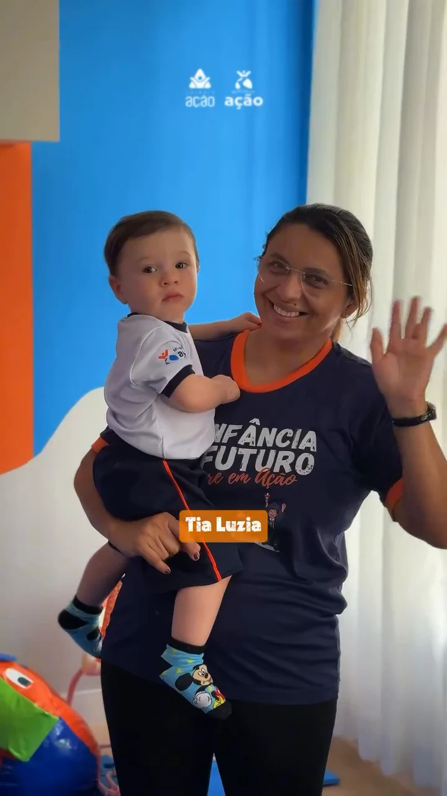
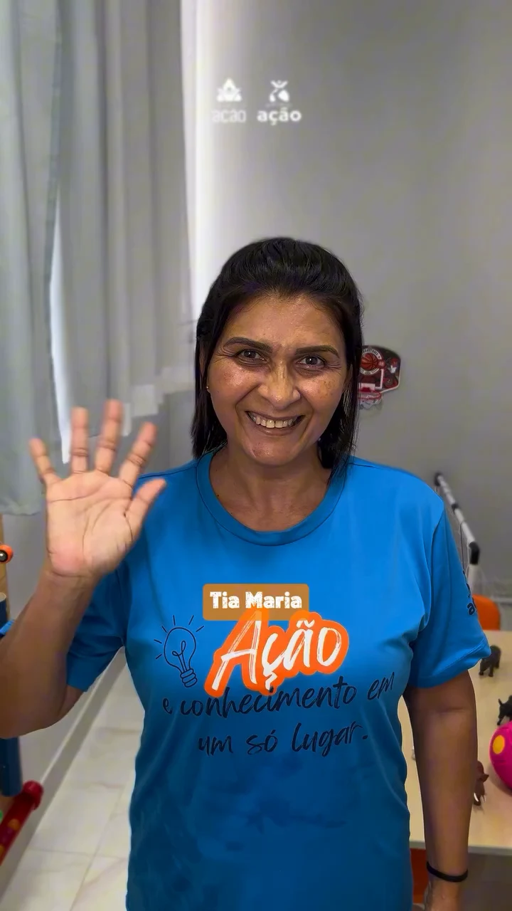
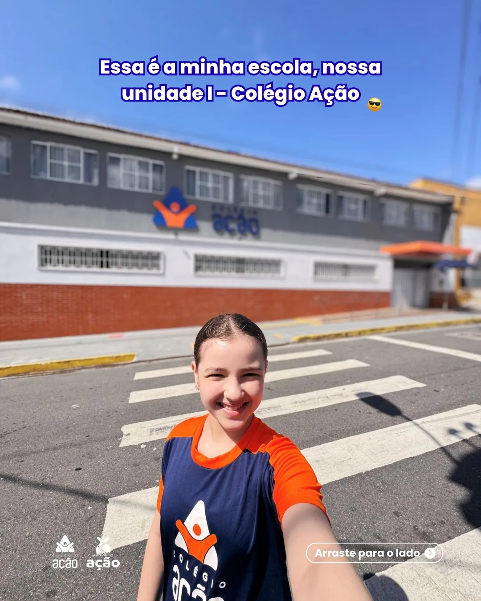

UNIDADE I
Colégio Ação
Fundamental I · Fundamental II · Ensino Médio
Rua Inconfidentes, 4710Neópolis · Natal/RN
CEP 59088-050(84) 3217-8902
Da Educação Infantil ao Ensino Médio, uma trajetória de descobertas, vínculos e aprendizado em Neópolis, Natal.


Aqui, aprender também é criar, experimentar, conviver e descobrir o próprio caminho.
O Colégio Ação e o Mundinho Ação compartilham uma história de educação em Neópolis. Nas salas, nos projetos e nos encontros com as famílias, o conhecimento se conecta à vida de crianças e adolescentes.
Conheça uma história dessa trajetória +Do primeiro brincar às escolhas para o futuro. Conheça as experiências de cada etapa.

Brincadeiras com propósito, experiências sensoriais e espaço para reconhecer emoções. No Mundinho Ação, o cotidiano da infância ganha oportunidades de aprender e se expressar.
Projetos que dão espaço à criatividade, à investigação e à participação dos alunos.

Inglês na práticaMonitores bilíngues apoiam o Ensino Médio e participam de uma proposta de aprendizagem que aproxima o inglês da rotina escolar.
Conheça o projeto +
Literatura & protagonismoA literatura se transforma em debate, pesquisa e protagonismo, com alunos assumindo papéis em um júri simulado.
Conheça a atividade +
Escuta & diálogoEm “Derrubando muros, construindo pontes”, o 8º ano trabalha a convivência com atividades de expressão, escuta e participação.
Veja o projeto +Preparação, participação e conquistas que a escola celebra com seus alunos.
Conheça essas históriasResultado divulgado pela escola em janeiro de 2026.
A escola celebrou a chegada de suas equipes à 5ª fase em junho de 2026.
Atividades de redação, literatura e conversas sobre trajetórias profissionais.
Professores, coordenação e equipe escolar fazem parte de cada descoberta.



Presença, cuidado e conhecimento que se encontram todos os dias.
A equipe do Mundinho Ação se apresenta em um passeio pela unidade. No Colégio Ação, os professores também compartilham projetos e momentos de preparação para os próximos passos dos alunos.
Análise Linguística & Literatura no aulão divulgado em 2026.
Redação no mesmo encontro de preparação dos alunos.
Auristela, ex-aluna da escola, compartilha sua trajetória na coordenação.
Carla e Lídia aparecem nas publicações como diretoras; Vani, como psicopedagoga. Histórias e funções apresentadas pela própria escola.
Conheça mais histórias da equipeDuas unidades em Neópolis, com ambientes apresentados pelos próprios alunos.

Outros ambientes apresentados no tour da Unidade II.
Ambas em Neópolis, Natal/RN. Escolha a unidade e trace sua rota.
Converse com a secretaria da etapa que você procura. Tire suas dúvidas e combine uma visita.
Fundamental I · Fundamental II · Ensino Médio
Rua Inconfidentes, 4710Educação Infantil
Rua Itapecerica, 2960Horário regular e semi-integral. Consulte a secretaria sobre turmas, disponibilidade e condições de matrícula.